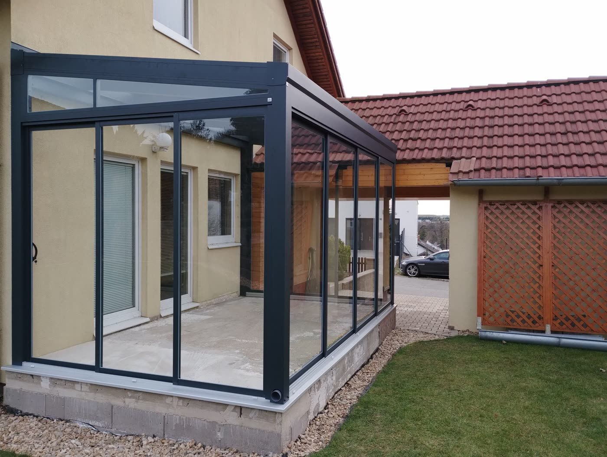
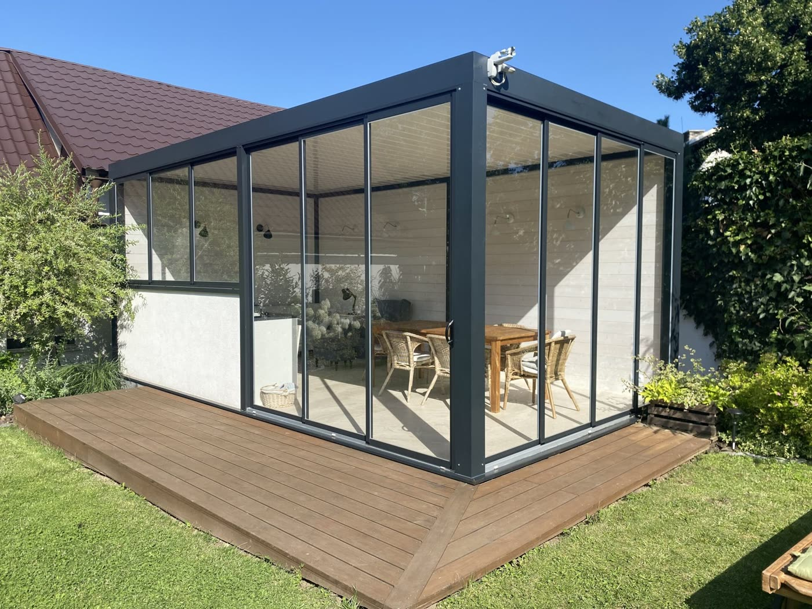

Co pro vás postavíme
Čtyři služby a 23 typů, které vyrábíme na zakázku. U každého typu najdete popis, parametry a fotky hotových staveb.

Zimní zahrady3 typů · 6 staveb Zasklení teras6 typů · 24 staveb
Zasklení teras6 typů · 24 staveb
Pergoly6 typů · 4 stavby Stínění8 typů · 8 staveb
Stínění8 typů · 8 staveb
Zimní zahrady
Sezonní i celoroční, s hliníkovou konstrukcí a skrytým žlabem.
- Sezonní zimní zahradyHliníkové zimní zahrady se skrytým žlabem, designové k moderním stavbám i ke klasickým rodinným domům. Nosnost počítáme pro každou konstrukci podle sněhové oblasti.
- Celoroční zimní zahradyKonstrukce z lepeného dřeva BSH s izolačním dvojsklem s argonem (U 1,1) a systémem Patio Living Therm. Prostor, který slouží jako plnohodnotná místnost po celý rok.
- LED osvětleníLED pásky v integrované liště v krokvích osvětlí místo nad stolem či posezením, novinkou je osvětlení předního žlabu. Kabely jsou vždy skryté v konstrukci, světlo lze stmívat.
Zasklení teras
Bezrámové Patio Living Move, rámové Combi a Plus.
- Rámové zaskleníUzavřete terasu či pergolu a získáte tzv. tepelný nárazník, který snižuje tepelné ztráty domu. Výplň může být sklo, polykarbonát i další materiály.
- Bezrámové zaskleníSystémy bez svislých profilů, které neruší výhled z terasy; nosným prvkem je bezpečnostní kalené sklo. Hodí se na všechny typy pergol a teras.
- Izolační zasklení Patio Living ThermRámový posuvný systém s drážkou pro izolační dvojsklo 24 mm a přerušeným tepelným mostem. Vhodný pro temperované prostory.
- Posuvné lamelové stěny Patio Living TiltPosuvné boční panely s hliníkovými lamelami nebo screenovou látkou. Chrání před větrem, sluncem a částečně i deštěm a přidají pergole soukromí.
- Dělící stěny a příčkyMobilní příčky pro oddělení místností v bytech, domech i komerčních objektech bez stavebních úprav. Rámové a bezrámové posuvné stěny i shrnovací dveře.
- Podlahy Termowood a WPCPodlahy k hliníkovým konstrukcím a zasklení teras či pergol: tepelně upravené dřevo ThermoWood nebo dřevoplastové podlahy WPC.

Pergoly
Hliníkové se skrytým žlabem i bioklimatické s ovládanou střechou, carporty.
- Pergoly se skleněnou střechouHliníkové pergoly se skrytým žlabem a střechou z lepeného bezpečnostního skla Connex 3.3.2. Bez typizovaných rozměrů, s výpočtem nosnosti na sníh.
- Pergoly s polykarbonátemStřecha z polykarbonátu LEXAN 16 mm v čirém, mléčném nebo bronzovém provedení. I klasické pergoly s přesahem střechy ke starším domům.
- Lamelové bioklimatické pergolyMísto pevné střechy elektricky naklápěcí lamely: v horku teplo odejde stropem, zavřené chrání před deštěm i sněhem. Doplnit jde zasklení nebo rolety ZIP.
- CarportyParkovací stání pro jedno či více aut ze systému pergol se skrytým žlabem. Lze osadit i fotovoltaické panely, výpočet nosnosti je součástí.
- Pergoly s vytahovací střechouMotorizované posuvné panely střechy umožňují postupné odvětrání prostoru. Střecha z lepeného skla, izolačního dvojskla nebo polykarbonátu.
- Pergoly s látkovou střechouHliníková konstrukce se zastíněním pro terasy, kde nejde o celoroční použití a kde chcete látku úplně odsunout. Například pergola ZEN nebo Veranda Box.
Stínění
Baldachýny, screen rolety, žaluzie a markýzy, i s motory Somfy.
- MarkýzyKlasické, kazetové a výklopné markýzy na kliku či s motorem, vyráběné na zakázku. Vyberete si z mnoha dekorů látek i barvu konstrukce.jen Jižní Čechy
- Markýzy pro zimní zahrady a pergolyNejúčinnější je stínění nad střešní krytinou, pod kterým proudí vzduch a brání přehřívání. Pod střechu se hodí podvěsná markýza, baldachýn nebo plissé.
- Doplňky VeluxJsme autorizovaným prodejcem vnitřního a vnějšího zastínění střešních oken Velux: žaluzie, rolety, plissé, sítě proti hmyzu a další.
- Sítě proti hmyzuSítě do oken i dveří: snadno demontovatelné, rolovací, s panty nebo plissé tam, kde je málo místa. Všechny v barvách podle vzorníku RAL.
- Screen rolety ZIPSvislé kazetové markýzy se ZIP systémem, který drží potah napnutý a zajistí ho proti vytržení i za silného větru. Chrání před sluncem a UV zářením a bez mezer u kolejnice slouží i jako ochrana proti hmyzu.
- Venkovní žaluzie a roletyOchrana před ostrým sluncem i pro soukromí, na kliku, provázek nebo s motorem. Doplnit lze automatické řízení podle větru.jen Jižní Čechy
- Vnitřní zastíněníHliníkové či dřevěné žaluzie, rolety, duo-rolety, plissé a japonské stěny do domu, bytu, pergoly i zimní zahrady.jen Jižní Čechy
- Baldachýnové zastíněníPodvěsná terasová markýza s kladkovou mechanikou a akrylovou látkou, až 600 × 600 cm. Lze ji namontovat i na stávající dřevěnou pergolu.
Nevíte, který typ vybrat?
Pošlete fotku terasy a přibližné rozměry. Poradíme, jaké řešení se pro váš dům hodí. Systémy si můžete prohlédnout i naživo v showroomu, Nemanická 5, České Budějovice.